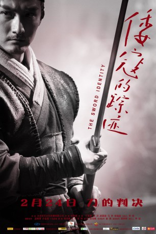

#11364 Sword Identity
 
 IMDB-Wertung: 5.4 / 10
IMDB-Wertung: 5.4 / 10  Metascore: 0
Metascore: 0 
Vier Material-Arts-Familien kontrollieren den kleinen Ort Guancheng. Wer eine neue Schule oder eine neue Art des Kung Fu etablieren möcht, ist gezwungen, alle vier Familien zum Kampf herauszufordern. Schließlich betreten zwei fremde Schwertkämpfer die Stadt, um einen Wettbewerb mit den Ansässigen anzufechten. Nach mehreren Kämpfen scheint eines der Schwerter nahezu unbesiegbar zu sein...
Jahr: 2011
Dauer: 110 Minuten
FSK:
Land: China Studio: Elephant FilmsTonspuren:
Untertitel:
Auflösung: 1080p (1920x1040) Größe: 4812 MB
Genre: Action
Regisseur: Haofeng Xu
Drehbuch: Haofeng Xu
Soundtrack: Yang Zhang
Darsteller:
- Yang Song als
- Yuanyuan Zhao als
- Ke Ma als
- Chenghui Yu als
- Jun Ma als
- Fujing Xu als
- Zhexin Liu als
- Weiping Yao als
- Keqin Ou als
- Guisheng Li als
- Bing Bo als
- Miva Mulati als
- Xiaolenayi Aini als
- Hasiyan Yeerken als
- Chen Jianxing als
- Zhangyin Liu als
- Yongfeng Hao als
- Zhang Zhe als
- Ning Yi als
- Jinlong Han als
- Leilei Liu als
- Jiahua Zhao als
- Ruyi Zhang als
- Li Zhenfei als
- Xuesong Li als
- Cui Yuanming als
- Yintao Zhu als
- Wang Shikai als
- Yanling Zhang als
- Zhang Fenglan Fang Jian als
Datei: X:\HD-Eastern-Classic(N-Z)\Sword Identity (2011, FSK, 1920x1040).mkv seit 24.06.2019
Festplatte: HD Eastern+Western
 Es gibt insgesamt 61 Filme in der Gruppe 'HD-Eastern-Classic(N-Z)'
Es gibt insgesamt 61 Filme in der Gruppe 'HD-Eastern-Classic(N-Z)'